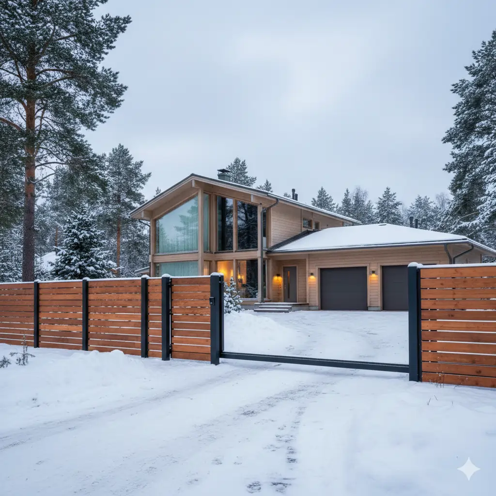

Aidat
Rakennamme selkeät ja kestävät aidat koko Pohjois-Karjalaan.
Aitapalvelu

Selkeä aita rajaa tonttisi, lisää turvallisuutta ja viimeistelee piha-alueen ilmeen. Rakennamme aidat puusta, metallista tai näiden yhdistelmistä.
Tarjoamme erilaisia aitavaihtoehtoja tarpeen mukaan – yksinkertaisesta rimaidat edustusaitaan. Aita toteutetaan kestävästi niin, että se kestää Suomen talvet huoletta omakotitalon tontin rajauksessa, taloyhtiöiden piha-alueilla ja mökkikohteissa.
Tarvittaessa toteutamme samalla myös portit, kulkuaukot ja näkösuojat, jotta kokonaisuus on yhtenäinen ja käytännöllinen.
Aidan suunnittelussa huomioitavaa
Rajaus
Selkeä tontin raja ja toimiva kulku.
Korkeus
Tarpeen mukainen suoja ja näkyvyys.
Materiaali
Kestävä vaihtoehto kohteen käyttöön.
Huollettavuus
Ratkaisu, joka pysyy hyvänä pitkään.
Lisätietoja aitauspalvelusta
Aidan rakentaminen kannattaa suunnitella pihan käytön mukaan: tarvitaan eri ratkaisu, jos painotus on näkösuojassa, lasten ja lemmikkien turvallisuudessa tai selkeässä tontin rajauksessa. Kohteissamme vertailemme yleisimmin avorima- ja näkösuoja-aitaa sekä porttiratkaisuja, jotta kulku pihassa pysyy toimivana myös talviaikaan.
Pohjois-Karjalan maastoissa korkeuserot ja maapohja vaikuttavat siihen, millainen perustamistapa aidalle valitaan ja kuinka huoltoväli pysyy pitkänä. Huomioimme samalla naapurirajojen käytännöt ja pihan linjaukset, jotta kokonaisuus on siisti ja kestävä. Toteutus etenee selkeästi mittauksesta tarjousvaiheeseen ja valmiiseen asennukseen.
Kuvagalleria
Modernin hirsitalon rima‑aita — Mustavaara
Modernin hirsitalon rima‑aita Mustavaarassa; mittatilausaita, joka täydentää pihan ilmeen ja kestää paikalliset sääolosuhteet.